Voiding items is necessary at various times. For example, Fulgora, producing quality ore, or removing byproducts.
Specifically, this test looks at establishing basic guidelines to allow further exploration of this problem space.
The test consists of multiple different "building block" ways to void items. Each of these was scaled up to approximately the same voiding rate
Test was ran 1k ticks each, 3 times per map
| Scenario | Save | Items voided/minute (each copy) | Items voided/minute (save total) | Image |
|---|---|---|---|---|
|
Infinity chest (control) |
infinity.cloned | 7200 | 46,080,000 | 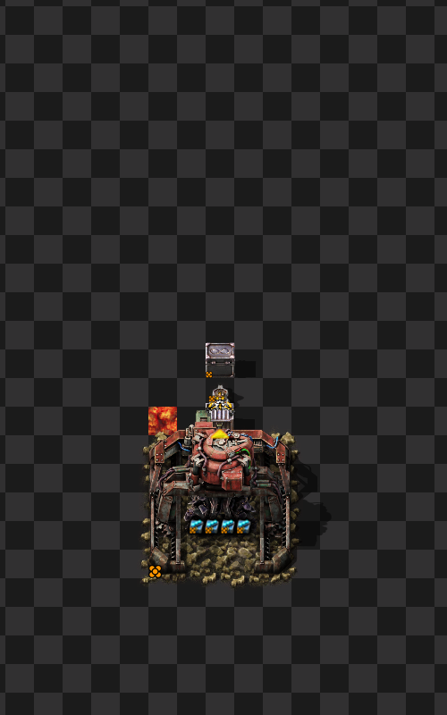 |
|
Recycler shuffle The classic, insert into two recyclers facing each other |
recycler.shuffle.cloned | 7200 | 46,080,000 | 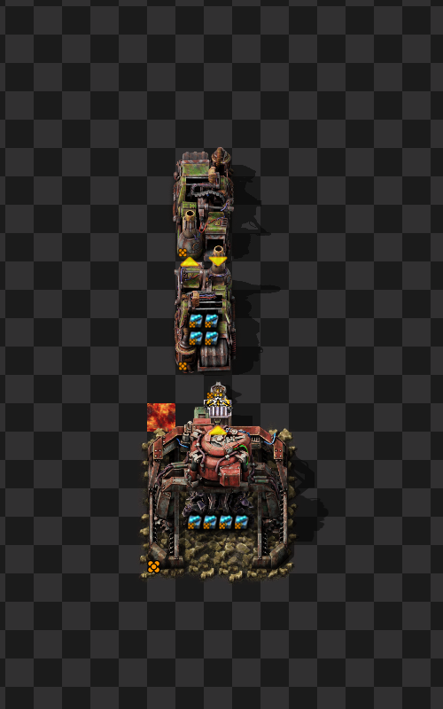 |
|
Recycler with bulk inserter handoff. Instead of directly inserting, batching the item transfer between the recyclers The uncommon quality is needed to keep up |
recycler.unc.bulk.handoff.cloned | 7200 | 46,080,000 | 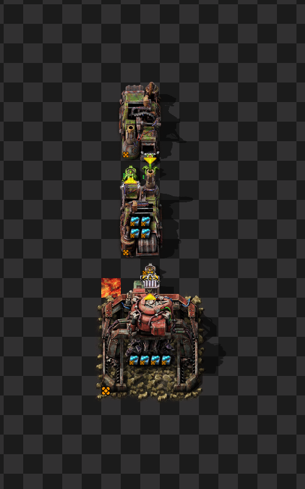 |
|
Recycler with legendary stack inserter handoff. Another variant on the previous, is it better to wait for 16 ready items? |
recycler.leg.stack.handoff.cloned | 7200 | 46,080,000 | 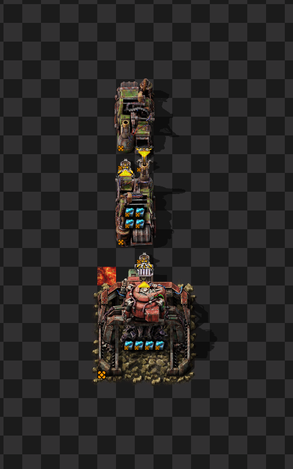 |
|
Dumping items into lava Items take a while to drop into lava, so this is the first (and only) case where 7200/m is not achieved by a single unit Dumping into lava creates smoke This has two sub-variants, one that clones in such a way the paste mining drills can see the ore belonging to other rows, and one where they are better spaced and cannot. |
lava.cloned.nomineroverlap | ~2504 | ~46,669,552 | 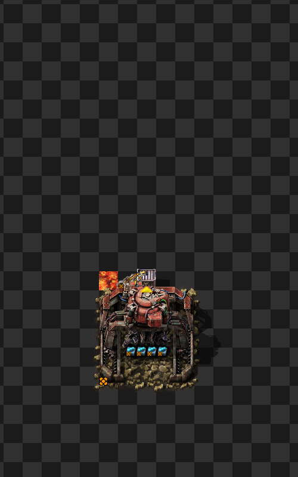 |
|
Landfill recycler shuffle Instead of going straight to recyclers, go to make landfill first |
landfill.recycler.shuffle.cloned | 7200 | 46,080,000 | 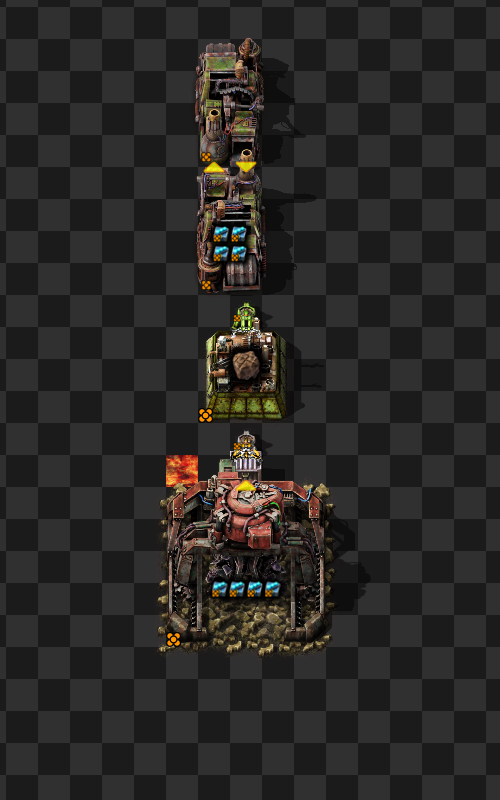 |
|
Landfill recycler handoff Does handoff become better/worse at lower craft rates? |
landfill.recycler.bulk.handoff.cloned | 7200 | 46,080,000 | 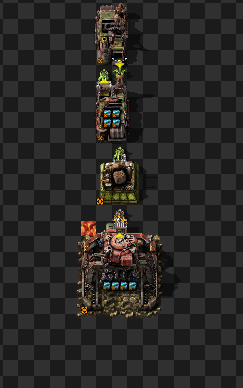 |
|
Landfill lava Keeps up |
landfill.recycler.shuffle.cloned | 7200 | 46,080,000 | 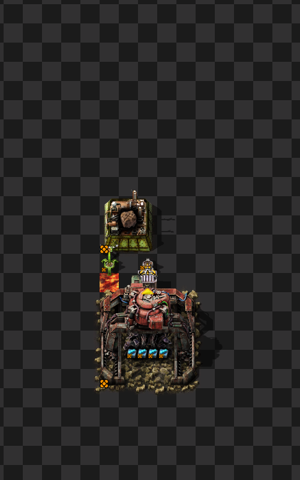 |
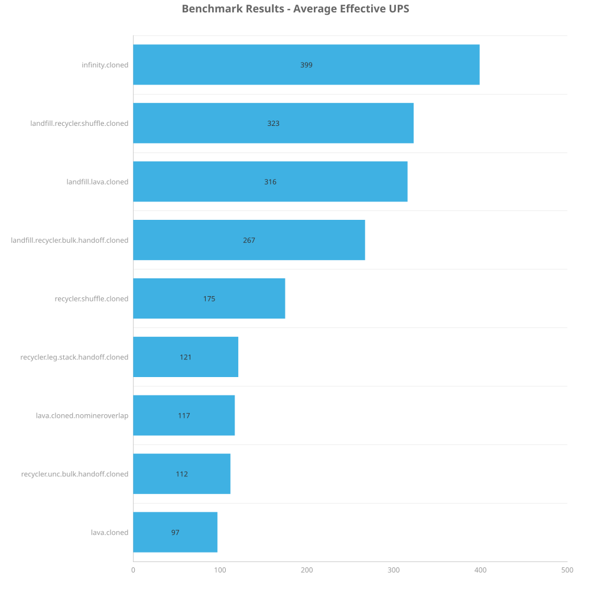
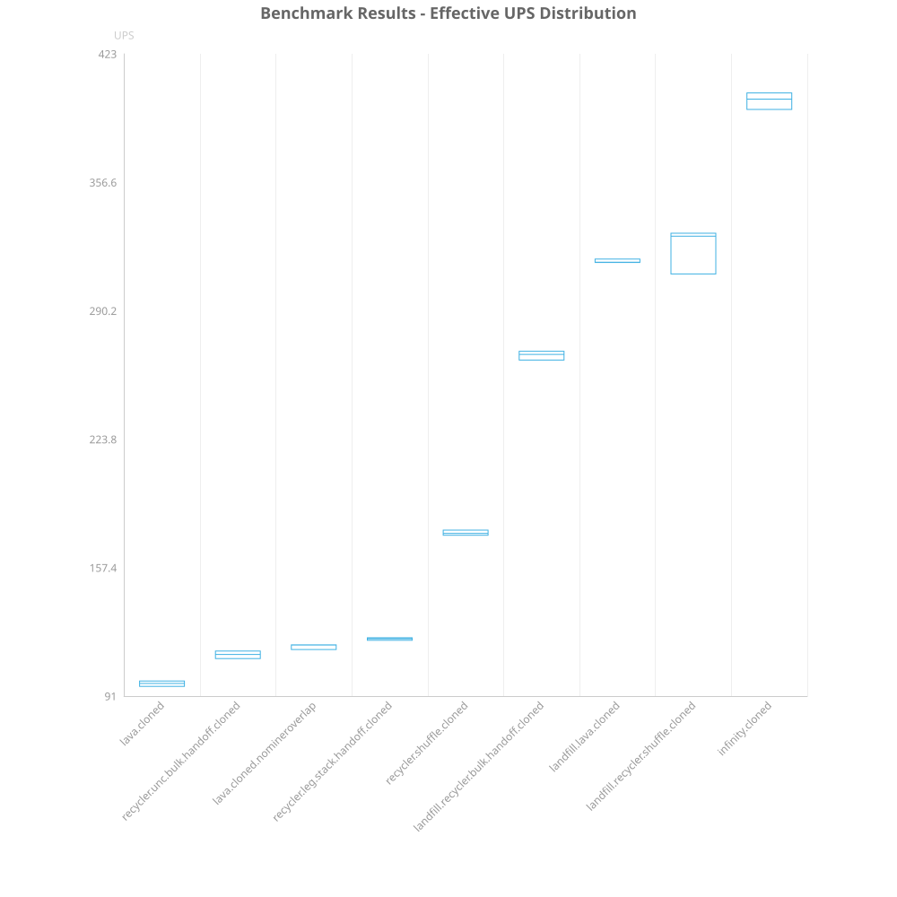
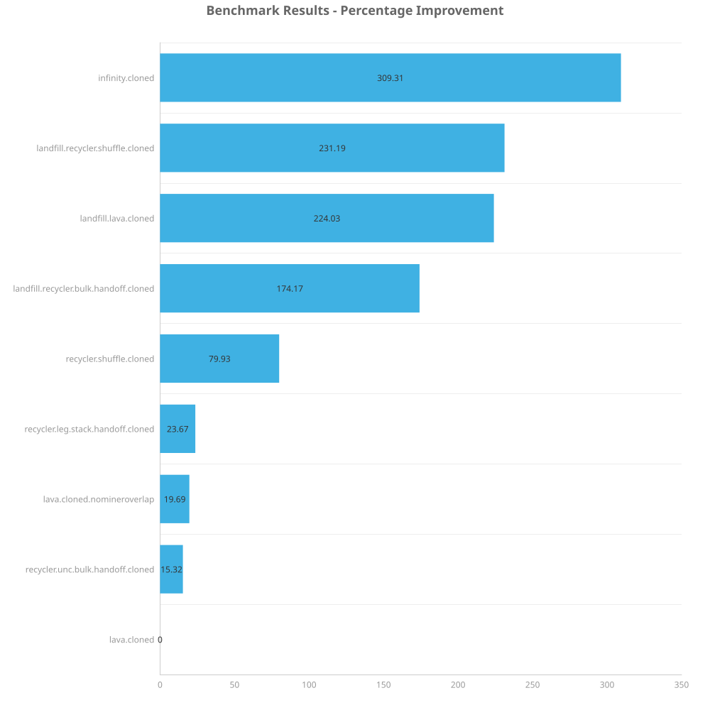
| Metric | Description |
|---|---|
| Mean UPS | Updates per second - higher is better |
| Mean Avg (ms) | Average frame time - lower is better |
| Mean Min (ms) | Minimum frame time - lower is better |
| Mean Max (ms) | Maximum frame time - lower is better |
| Save | Avg (ms) | Min (ms) | Max (ms) | UPS | Execution Time (ms) | % Difference from base |
|---|---|---|---|---|---|---|
| lava.cloned | 10.263 | 4.423 | 25.923 | 97 | 30789 | 0.00% |
| recycler.unc.bulk.handoff.cloned | 8.900 | 3.891 | 16.254 | 112 | 26701 | 15.32% |
| lava.cloned.nomineroverlap | 8.575 | 3.321 | 24.272 | 116 | 25724 | 19.69% |
| recycler.leg.stack.handoff.cloned | 8.298 | 2.951 | 14.688 | 120 | 24892 | 23.67% |
| recycler.shuffle.cloned | 5.703 | 1.640 | 12.645 | 175 | 17109 | 79.93% |
| landfill.recycler.bulk.handoff.cloned | 3.743 | 0.695 | 11.205 | 267 | 11229 | 174.17% |
| landfill.lava.cloned | 3.167 | 0.388 | 10.389 | 315 | 9500 | 224.03% |
| landfill.recycler.shuffle.cloned | 3.101 | 0.432 | 11.792 | 322 | 9303 | 231.19% |
| infinity.cloned | 2.507 | 0.372 | 8.462 | 398 | 7521 | 309.31% |
All maps will be uploaded here.
Crafting landfill first was clearly better in all cases. Additionally, adding a handoff is clearly worse than just cross feeding the recyclers.
Having more ore than necessary under an affected miner is harmful for performance. This is mainly a consideration when preparing saves for benchmarking. Avoid cloning a single ore under a miner, but also avoid having different number of ores available for mining by the different designs. Region cloner version 3.1.0+ adds intelligence for /autoclone command to improve the default behavior here (manually selected areas can still result in bad behavior).